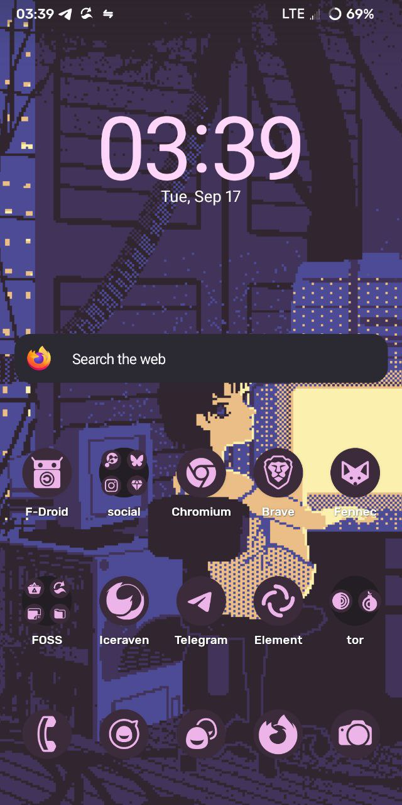

now | blog | wiki | recipes | bookmarks | contact | about | donate
* * * back home * * *
want a free software phone? try this!
2024-09-19
I've been running Android devices without Google services since back in the CynanogenMod days, which is now defunct, and replaced by LineageOS. I also enjoy helping people who want to "liberate their phone". I have never done a writeup on this process before, however, and I think now is as good a time as any. If you're interested in running a free software AOSP distribution on your phone, I highly recommend LineageOS. It is kept up-to-date by the community and supports a range of devices from different manufacturers.
my moto z3 play running lineageOS
Before we go any further, let's make sure your device is supported by LineageOS. You can take a look at all currently supported devices at the devices page.
Okay, going forward in this post, we're going to assume that you have a device that is supported by LineageOS. I currently use a Moto z3 Play (beckham), so for the examples in this post, it will be the reference device. We're also going to assume that you have already backed up any important data from your current Android installation, and unlocked your device's bootloader.
When preparing to install LineageOS, you're going to need two very important files before getting started. Make a folder on your machine (name it 'Lineage' or something similar to make it easy to remember). In this folder, we will download the current LineageOS build for your device, as well as the recovery image. Links to both of these will be given on your device's LineageOS page.
Here, as an example, is the LineageOS device page for beckham.
We'll grab the current build for beckham first (it's the .zip file):
wget https://mirrorbits.lineageos.org/full/beckham/20240828/lineage-21.0-20240828-nightly-beckham-signed.zip -nv --show-progress
Besides the .zip file, you will also see a file named boot.img. This is the recovery image, and it is important to ensure you have this during the flashing process, so grab it, too (while still in your LineageOS folder, or whatever you named it):
wget https://mirrorbits.lineageos.org/full/beckham/20240828/boot.img -nv --show-progress
Now that we have the needed files, we also need to make sure we have two important packages for installation of LineageOS onto our device. I'm going to assume you're running a Debian or Ubuntu-based GNU/Linux distro throughout the course of this post, like I am (Debian 12). We need adb and fastboot to carry on properly. Let's ensure we have them:
doas apt update; doas apt install -y adb fastboot
With these installed, we're ready to move on!
Now, we're ready to begin the main steps - flashing the build to your device.
Before we carry on, make sure to boot into your current Android OS and ensure USB debugging is turned on!
The next thing we need to do is get the device into fastboot mode. With it on, connect it to the computer and enter the following in your terminal:
adb -d reboot bootloader
You should see it boot into something looking like this. With your device now in fastboot mode, it's time to flash some files!
quick tip: You can also get to fastboot mode without connecting it to a machine first, if you need to. Just hold down your device's volume-down and power buttons at the same time for a few seconds.
Now, let's make sure our device is being recognized by the computer. The following command should output a string of numbers if it detects the device.
fastboot devices
If you see a message containing something along the lines of no permissions fastboot, try running it with elevated privileges:
doas fastboot devices
Now that we've confirmed our computer can see our phone, let's get going on the installation of LineageOS. First, we're going to install the recovery image, where we will be doing a lot of this process from:
fastboot flash boot boot.img
Up next, we're going to do something that will not have to be done on every device, but it depends on your specific device. On my Moto z3 Play, we have an a/b partitioning scheme. When installing alternate versions of Android, the inactive slot might end up containing older firmware than the currently active slot. Not fixed, this could result in a bricked device. As such, we will run this copy-partitions program that copies the contents of the currently active slot into the inactive one.
adb -d sideload copy-partitions-20220613-signed.zip
Now, we can reboot the device into recovery mode.
Within recovery mode, it's now time for the main event - finally flashing LineageOS files.
First, we're going to tap the Factory Reset button, and then we will select the format data/factory reset option. When this is done, go back to the main menu. We will now select Apply Update, then selecting the Apply From ADB option. Back on our machine, we will issue the following command:
adb -d sideload lineage-21.0-20240828-nightly-beckham-signed.zip
This part might take a few minutes. When it is finished, however, we are ready to reboot the device using Reboot System Now and move onto enjoying our new installation of LineageOS!
Please note that this post is not a replacement for reading the LineageOS guide for your specific device! This post aims to be an exploration into one specific device for people curious about diving into alternate versions of Android. There are all kinds of different devices supported by Lineage, however, so always make sure you follow your specific installation guide, found on the lineageOS devices page.
Once the device is rebooted and LineageOS setup including adding our fingerprints and setting our PIN code, it's time to add some sources for apps! I recommend doing the following for your new installation (I'm assuming you're running without gapps, like I am):
This week, I have been reading The Ballad of Songbirds and Snakes by Suzanne Collins.